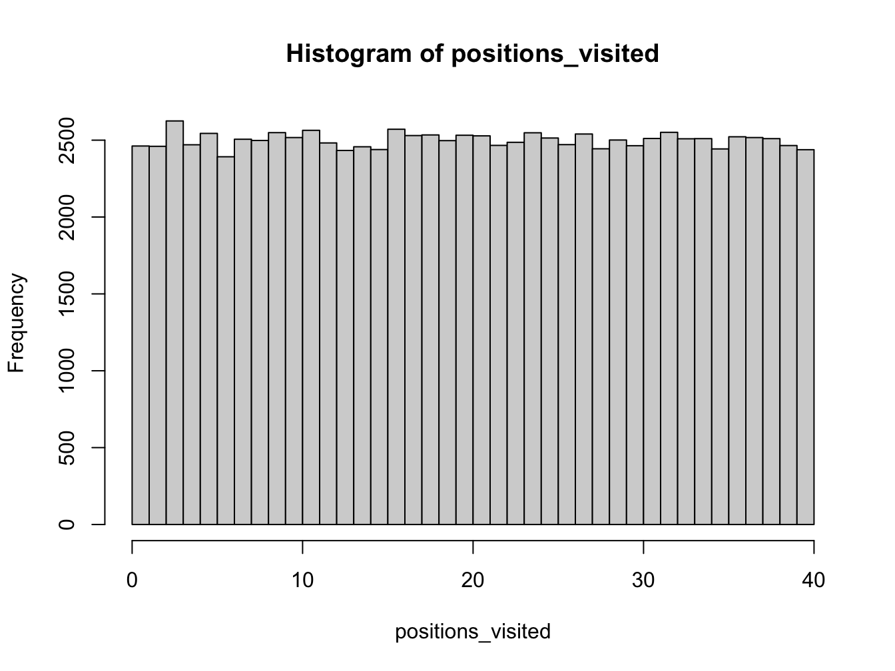
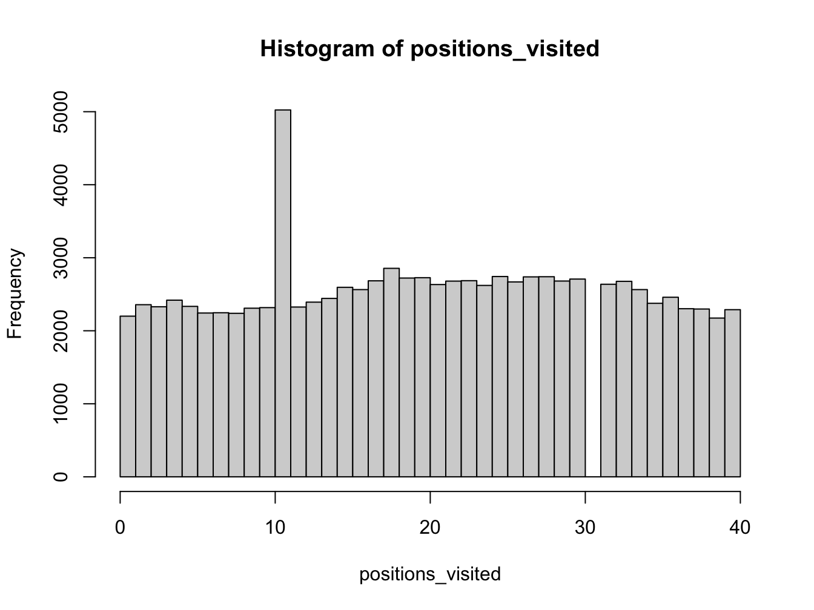

3 A Monopoly simulation
Now you will use to simulate simplified games of Monopoly (https://en.wikipedia.org/wiki/Monopoly_(game)). In addition, there are also many tutorials and guides on the Web describing how to produce computer simulations for Monopoly. You are welcome to read and use these examples to inspire your work.
This will be your first larger simulation. The first thing to do when working on a larger simulation is to break it down into smaller parts and set up a plan. Here are some steps to consider:
- Simulate a single player moving around the board
- Simulate a player going to jail
- Simulate a player going to jail with three doubles
- Simulate multiple players moving around the board
- … and so on
We will start with the first step.
3.1 Moving around the board
A Monopoly board has 40 spaces. Players take it in turns to roll two dice and traverse around the board according to the sum of the dice values. You can plan this code by considering the main components:
- the board
- the dice
- the player position
- the input you need to provide
- the output you want to get
Use the following code example to simulate turns of a single player moving around the board. The code will simulate a player moving around the board for a number of turns and store the board positions visited. Consider each step of the code and try to understand what it is doing and why.
num_turns <- 100000 # number of turns to take
current_board_position <- 0 # start on the GO space
move_size <- rep(0, num_turns)
positions_visited <- rep(0, num_turns)
# use a for loop to simulate a number of turns
for (turn in 1:num_turns) {
# roll two dice
die_values <- sample(c(1:6), 2, replace = TRUE)
# move player position
# number of positions to move
plus_move <- sum(die_values)
# compute new board position
new_board_position <- current_board_position + plus_move
# update board position (this corrects for the fact the board is circular)
current_board_position <- (new_board_position %% 40)
# store position visited
positions_visited[turn] <- current_board_position
}By increasing the number of turns taken, what distribution does the set of simulated board positions converge towards? Show this graphically using the histogram function.

3.2 Questions to consider
- What is the distribution of board positions during a long game?
- Can you explain this result qualitatively?
- How does the distribution change if you increase the number of turns?
- Why do you need to specify 41 of breaks in the histogram?
- What does
right = FALSEdo in thehistfunction?
Discuss with your neighbour and the instructor.
3.3 Creating a function
Before we move on, it is a good idea to put the code you have just written into a function. This will make it easier to reuse and modify later. This will then allow you to easily extend the simulation to include more complex aspects of the game and test the results.
3.4 Exercise - Create a function
Create a function called monopoly_sim that takes the number of turns as an input argument and returns the vector of board positions visited. You can use the code you have just written as a starting point.
3.5 Going to Jail
Now we will add the next level of complexity to the simulation. We will consider the possibility of going to jail.
If a player lands on to Go To Jail space they must move immediately to the Jail space. Extend your code to include the possibility of going to jail. Here, assume that once in jail, the player continues as normal on the next turn. This is of course not the case in the real game, but we are simplifying the rules for this simulation.
num_turns <- 100000 # number of turns to take
current_board_position <- 0 # start on the GO space
go_to_jail_position <- 30 # the go to jail space
jail_position <- 10 # jail space
move_size <- rep(0, num_turns)
positions_visited <- rep(0, num_turns)
# use a for loop to simulate a number of turns
for (turn in 1:num_turns) {
# roll two dice
die_values <- sample(c(1:6), 2, replace = TRUE)
# move player position
# number of positions to move
plus_move <- sum(die_values)
# compute new board position
new_board_position <- current_board_position + plus_move
# if land on GO TO JAIL square, then go backwards to the JAIL square
if (new_board_position == go_to_jail_position) {
new_board_position <- jail_position
}
# update board position (this corrects for the fact the board is circular)
current_board_position <- (new_board_position %% 40)
# store position visited
positions_visited[turn] <- current_board_position
}3.6 Exercise - Going to Jail
Plot the distribution of board positions during a long game with the possibility of going to jail. How does the distribution change compared to the previous simulation without the possibility of going to jail?
Show plot

Explain the results qualitatively.
Discuss with your neighbour and the instructor.- Create a new function called
monopoly_jail_simthat includes the possibility of going to jail. The function should take the number of turns as an input argument,num_turns, and the jail position,jail_position, (but have a default when that is not explicitly provided) and return the vector of board positions visited. - What is the distribution of board positions during a long game?
3.7 Exercise - Repeated doubles
Now we will add the next level of complexity to the simulation by considering the possibility of going to jail with three doubles. A double is when both dice have the same value.
Update your code to allow for the possibility of going to Jail with three doubles. How does the distribution of board positions change?
Plan your code by considering the main components:
- detecting doubles
- counting doubles
- going to jail with three doubles
- updating the board position
Ensure your code is in a function called monopoly_double_sim that takes the number of turns as an input argument, num_turns, and the jail position, jail_position, (but have a default when that is not explicitly provided) and returns the vector of board positions visited.
3.8 Exercises - Extend the game
As the final part of this exercise, consider building a more complex Monopoly simulation by incorporating more complex aspects of the game such as:
- the purchase of properties
- a ledger for each player
- chance and community cards
You will need to think carefully about the simplifying assumptions you will make to make the task achievable. Do not be over-ambitious. For example, you might initially assume that players will not build houses/hotels on properties.
Here are some questions to answer with your simulations:
- How many turns does it take before all properties are purchased?
- What are the best properties to buy?
- How long does it take for a winner to be determined?
As before you want to plan out your code and break it down into smaller parts. You can start by simulating a single player purchasing properties. You can then extend this to multiple players and so on. Do not try to do everything at once.
The code should be in a function called monopoly_ext_sim that takes the number of turns as an input argument, num_turns, and the jail position, jail_position, (but have a default when that is not explicitly provided) and returns a list containing the vector of board positions visited and any other information you want to return.
Note, before looking at the results, try to implement the simulation yourself. Use google to research any functions or techniques you are not familiar with.